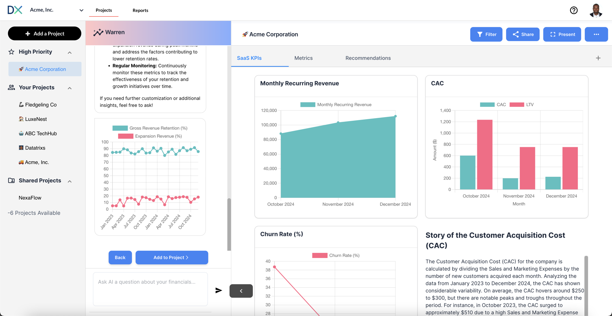

Hi Datatrixs Users,
We're thrilled to announce some exciting updates to Datatrixs that will empower you with even deeper insights and streamline your financial analysis, now with enhanced capabilities powered by Warren! We've been working hard to enhance your experience, and these latest improvements are designed to provide greater clarity, flexibility, and control over your data, all thanks to the intelligence of Warren.
This is a significant update we know many of you have been waiting for! When using QuickBooks data, Warren, the intelligent core of Datatrixs, will now provide the reasoning behind its calculations and analysis when necessary.
Previously, this level of transparency was only available when working with uploaded files. Now, whether you're leveraging Warren to analyze your QuickBooks data or custom uploads, you'll gain a clearer understanding of how it arrives at its insights. This could include:
This enhancement, driven by Warren's intelligence, provides a new level of confidence in your data analysis, allowing you to understand the "why" behind the numbers and make more informed decisions.
As you can see in the updated look of Datatrixs, we've introduced a cleaner and more intuitive user interface. This modern design aims to improve your overall workflow and make it easier to navigate between different sections and features. Key improvements include:
We've made it easier to manage your projects within Datatrixs. You'll notice improvements in how you can organize, access, and collaborate on different analyses powered by Warren. This includes:
These updates are live now! Simply log in to your Datatrixs account to experience the enhanced interface and the crucial new transparency with your QuickBooks data, powered by Warren. We encourage you to explore the new features and see how they can further empower your financial analysis.
We are committed to continuously improving Datatrixs and providing you with the best possible tools for understanding and growing your business, with Warren as your intelligent guide. As always, your feedback is invaluable. Please don't hesitate to reach out to our support team if you have any questions or suggestions.
Thank you for being a valued Datatrixs user!
Sincerely,
The Datatrixs Team